5.2 Random Forests
One potential problem with bagged trees is that the predictions across trees often correlate strongly. This is because, even if a new bootstrap sample is used to create the tree, all of the features are used in every tree. Thus, if a given feature is strongly predictive of the outcome, it is likely to be used as the root node in nearly every tree. Because decision trees are built recursively, with optimal splits only determined after previous splits have already been determined, this means that we may be missing out on potential predictive accuracy by not allowing other features to “start” the tree (be the root node). This does not mean that bagging is not useful. As we just saw, we were able to have fairly substantial gains in model performance using bagging when compared to what we observed with a single tree. Yet, if we could decorrelate the trees, we might be able to improve performance even more.
Random forests extend bagged trees by introducing a stochastic component to the features. Specifically, rather than building each tree with all of the features, each tree is built using a random sample of features at each split. The predictive performance of any individual tree is then unlikely to be as performant as a tree using all the features at each split, but the forest of trees (aggregate prediction) can regularly provide better predictions than any single tree.
Assume we have a features with one very strong predictor and a few features that are moderately strong predictors. If we used bagging, the moderately strong predictors would likely be internal nodes for nearly every tree–meaning their importance would be conditional on the strong predictor. Yet, these variables might provide important information for specific samples on their own. If we remove the very strong predictor for the root node split, that tree we be built with one of the moderately strong predictors at the root node. The very strong predictor may then be selected in one of the internal nodes and, while this model may not be as predictive overall, it may result in better predictions for specific cases. If we average over all these diverse models we can often get better predictions for the entire dataset.
In essence, a random forest is just a bagged tree with a stochastic component introduced to decorrelate the trees. This means each individual model is more different than a bagged tree. When we average across all the trees we reduce this variance and may be able to get overall improved performance when compared to a single tree or a bagged tree.
Random forests work like bagged trees, but include a random selection of features at each split. This helps decorrelate the trees and can help get at the unique features of the data.
Random forest models tend to provide very good “out of the box” model performance. Because bagged trees are just a special case of random forests, and the number of predictors to select for each tree is a hyperparameter that can be tuned, it’s generally worth starting with a random forest and only moving to a bagged tree if, for your specific situation, using all the predictors for each tree works better than using a sample.
5.2.1 Fitting random forests
In the previous section we used the rand_forest() function to fit bagged classification trees and obtain performance metrics on the OOB samples. We did this by setting mtry = p, where p is equal to the number of predictor variables. When fitting a random forest, we just change mtry to a smaller value, which represents the number of features to randomly select from at each split. Everything else is the same: trees represents the number of bags, or the number of tree in the forest, while min_n represents the minimum sample size for a terminal node (i.e., limiting the depth to which each tree is grown).
A good place to start is mtry = p/3 for regression problems and mtry = sqrt(p) for classification problems. Generally, higher values of mtry will work better when the data are fairly noisy and the predictors are not overly strong. Lower values of mtry will work better when there are a few very strong predictors.
Just like bagged trees, we need to have a sufficient number of trees that the performance estimate stabilizes. Including more trees will not hurt your model performance, but it will increase computation time. Generally, random forests will need more trees to stabilize than bagged trees, because each tree is “noisier” than those in a bagged tree. A good place to start is at about 1,000 trees, but if your learning curve suggests the model is still trending toward better performance (rather than stabilizing/flat lining) then you should add more trees. Note that the number of trees you need will also depend on other hyperparameters. Lower values of mtry and min_n will likely lead to needing a greater number of trees.
Because we’re using bagging in a random forest we can again choose whether to use \(k\)-fold cross validation or just evaluate performance based on the OOB samples. If we were in a situation where we wanted to be extra sure we had conducted the hyperparameter tuning correctly, we might start by building a model on the OOB metrics, then evaluate a small candidate of hyperparameters with \(k\)-fold CV to finalize them. In this case we will only use the OOB metrics to save on computation time.
5.2.1.1 A classification example
Let’s continue with our classification example, using the same training data and recipe we used in the previous section. As a reminder, the recipe looked like this:
And we prepared the data for analysis so it looked like this:
## # A tibble: 2,767 x 6
## event_count event_code game_time title world accuracy_group
## <dbl> <dbl> <dbl> <fct> <fct> <ord>
## 1 1 2000 0 Mushroom… TREE… 3
## 2 3 3010 37 Mushroom… TREE… 3
## 3 5 3010 3901 Mushroom… TREE… 3
## 4 10 4025 8400 Mushroom… TREE… 3
## 5 12 3121 8926 Mushroom… TREE… 3
## 6 13 4025 9502 Mushroom… TREE… 3
## 7 16 3121 10210 Mushroom… TREE… 3
## 8 17 2035 10210 Mushroom… TREE… 3
## 9 18 2020 10210 Mushroom… TREE… 3
## 10 20 4070 10543 Mushroom… TREE… 3
## # … with 2,757 more rowsWe will again optimize on the model AUC. Recall that we had 5 predictor variables. Let’s start by fitting a random forest with 1,000 trees, randomly sampling two predictors at each split (\(\sqrt{5}=2.24\)). We’ll set min_n to 2 again so we are starting our modeling process by growing very deep trees
rf_mod1 <- rand_forest() %>%
set_mode("classification") %>%
set_engine("ranger") %>%
set_args(mtry = 2,
min_n = 2,
trees = 1000)
tic()
rf_fit1 <- fit(rf_mod1,
formula = accuracy_group ~ .,
data = processed_train)
toc()## 2.527 sec elapsedNote that even with 1,000 trees, the model fits very quickly. What does our AUC look like for this model?
pred_frame <- rf_fit1$fit$predictions %>%
as_tibble() %>%
mutate(observed = processed_train$accuracy_group)
roc_auc(pred_frame, observed, `0`:`3`)## # A tibble: 1 x 3
## .metric .estimator .estimate
## <chr> <chr> <dbl>
## 1 roc_auc hand_till 0.848Looks pretty good! Note that this is quite similar to the best value we estimated using a bagged tree.
But did our model stabilize? Did we use enough trees? Let’s investigate. First, we’ll write a function so we can easily refit our model with any number of trees, and return the OOB AUC estimate.
fit_rf <- function(tree_n, mtry = 2, min_n = 2) {
# specify the model
rf_mod <- rand_forest() %>%
set_mode("classification") %>%
set_engine("ranger") %>%
set_args(mtry = mtry,
min_n = min_n,
trees = tree_n)
# fit the model
rf_fit <- fit(rf_mod,
formula = accuracy_group ~ .,
data = processed_train)
# Create a data frame from which to make predictions
pred_frame <- rf_fit$fit$predictions %>%
as_tibble() %>%
mutate(observed = processed_train$accuracy_group)
# Make the predictions, and output other relevant information
roc_auc(pred_frame, observed, `0`:`3`) %>%
mutate(trees = tree_n,
mtry = mtry,
min_n = min_n,
model = list(rf_fit))
}Notice in the above we’ve made it a bit more general so we can come back to checking the number of trees with different values of mtry and min_n. Let’s look at values from 100 (which is almost certainly too low) to 1201 by increments of 50 trees. First, we loop through these values using map_df() so they are all bound in a single data frame.
Next, we plot the result!

And as we can see, we’re actually pretty safe with a much lower value, perhaps even as low as 100. However, because the models run very fast, we won’t worry too about this too much. When we conduct our model tuning, we’ll drop to 500 trees instead of 1000 (still well above what it appears is needed).
Let’s see if we can improve performance by changing the mtry or min_n. Because we only have five predictor variables in this case, we don’t have a huge range to evaluate with mtry. But let’s setup a regular grid looking at values of 2, 3, 4 and 5 for mtry, and min_n values of 2, 5, 10, 15, 20, and 25. We can then use our fit_rf() function again, but this time setting the number of trees and looping through each of our mtry and min_n values.
grid <- expand.grid(mtry = 2:5,
min_n = c(2, seq(5, 25, 5)))
rf_tune <- map2_df(grid$mtry, grid$min_n, ~fit_rf(500, .x, .y))
rf_tune %>%
arrange(desc(.estimate))## # A tibble: 24 x 7
## .metric .estimator .estimate trees mtry min_n model
## <chr> <chr> <dbl> <dbl> <int> <dbl> <list>
## 1 roc_auc hand_till 0.859 500 5 5 <fit[+]>
## 2 roc_auc hand_till 0.859 500 5 10 <fit[+]>
## 3 roc_auc hand_till 0.857 500 5 20 <fit[+]>
## 4 roc_auc hand_till 0.857 500 5 15 <fit[+]>
## 5 roc_auc hand_till 0.856 500 4 10 <fit[+]>
## 6 roc_auc hand_till 0.856 500 4 15 <fit[+]>
## 7 roc_auc hand_till 0.855 500 5 2 <fit[+]>
## 8 roc_auc hand_till 0.855 500 4 5 <fit[+]>
## 9 roc_auc hand_till 0.855 500 5 25 <fit[+]>
## 10 roc_auc hand_till 0.854 500 4 20 <fit[+]>
## # … with 14 more rowsAnd notice that all of our top models here include our maximum number of predictors. So in this case, bagged trees are actually looking like our best option (rather than a random forest).
5.2.1.2 A regression example
For completeness, let’s run through another example using our statewide testing data. We didn’t use these data when fitting a bagged tree model, but we can start with a random forest anyway and see if it simplifies to a bagged tree.
First, let’s read in the data and create our testing set. We’ll only sample 5% of the data so things run more quickly.
state_tests <- read_csv("https://github.com/uo-datasci-specialization/c4-ml-fall-2020/raw/master/data/train.csv") %>%
slice_sample(prop = 0.05) %>%
select(-classification)
splt_reg <- initial_split(state_tests)
train_reg <- training(splt_reg)Now we’ll create a recipe for these data. It is a bit more complicated than the last example because the data are a fair amount more complicated. The recipe looks like this:
rec_reg <- recipe(score ~ ., data = train_reg) %>%
step_mutate(tst_dt = lubridate::mdy_hms(tst_dt),
time_index = as.numeric(tst_dt)) %>%
update_role(tst_dt, new_role = "time_index") %>%
update_role(contains("id"), ncessch, new_role = "id vars") %>%
step_novel(all_nominal()) %>%
step_unknown(all_nominal()) %>%
step_rollimpute(all_numeric(), -all_outcomes(), -has_role("id vars")) %>%
step_medianimpute(all_numeric(), -all_outcomes(), -has_role("id vars")) %>% # neccessary when date is NA
step_zv(all_predictors()) The recipe above does the following
- Defines
scoreas the outcome and all other variables as predictors - Changes the
tst_dtcolumn (date the assessment was taken) to be a date (rather than character) and creates a new column that is a numeric version of the date - Changes the role of
tst_dtfrom a predictor to atime_index, which is a special role that can be used to calculate date windows - Changes the role of all ID variables to an arbitrary
"id vars"role, just so they are not used as predictors in the model - Recodes nominal columns such that previously unencountered levels of the variable will be recoded to a
"new"level - Imputes and
"unknown"category for all nominal data - Uses a rolling time window imputation (median for the closes 5 data points) to impute all numeric columns
- In cases where the time window is missing, imputes with the median of the column for all numeric columns
- Removes zero variance predictors
Next, we want to process the data using this recipe. Note that after we bake() the data, we remove those variables that are not predictors. Note that it might be worth considering keeping a categorical version of the school ID in the model (given that the school in which a student is enrolled is likely related to their score), but to keep things simple we’ll just remove all ID variables for now.
processed_reg <- rec_reg %>%
prep() %>%
bake(new_data = NULL) %>%
select(-contains("id"), -ncessch, -tst_dt)
processed_reg## # A tibble: 7,104 x 32
## gndr ethnic_cd enrl_grd tst_bnch migrant_ed_fg ind_ed_fg
## <fct> <fct> <dbl> <fct> <fct> <fct>
## 1 M W 3 1B N N
## 2 M W 8 3B N N
## 3 M W 3 1B N N
## 4 F H 3 1B N N
## 5 F H 5 2B N N
## 6 F W 4 G4 N N
## 7 F W 7 G7 N N
## 8 M W 3 1B N N
## 9 M H 8 3B N N
## 10 M W 4 G4 N N
## # … with 7,094 more rows, and 26 more variables: sp_ed_fg <fct>,
## # tag_ed_fg <fct>, econ_dsvntg <fct>, ayp_lep <fct>,
## # stay_in_dist <fct>, stay_in_schl <fct>, dist_sped <fct>,
## # trgt_assist_fg <fct>, ayp_dist_partic <fct>,
## # ayp_schl_partic <fct>, ayp_dist_prfrm <fct>,
## # ayp_schl_prfrm <fct>, rc_dist_partic <fct>,
## # rc_schl_partic <fct>, rc_dist_prfrm <fct>,
## # rc_schl_prfrm <fct>, lang_cd <fct>, tst_atmpt_fg <fct>,
## # grp_rpt_dist_partic <fct>, grp_rpt_schl_partic <fct>,
## # grp_rpt_dist_prfrm <fct>, grp_rpt_schl_prfrm <fct>,
## # lat <dbl>, lon <dbl>, score <dbl>, time_index <dbl>We’ll now use the processed data to fit a random forest, evaluating our model using the OOB samples. Let’s start by writing a function that fits the model for a given set of hyperparameters and returns a data frame with the hyperparameter values, our performance metric (RMSE) and the model object.
rf_fit_reg <- function(tree_n, mtry, min_n) {
rf_mod_reg <- rand_forest() %>%
set_mode("regression") %>%
set_engine("ranger") %>%
set_args(mtry = mtry,
min_n = min_n,
trees = tree_n)
rf_fit <- fit(rf_mod_reg,
formula = score ~ .,
data = processed_reg)
# output RMSE
tibble(rmse = sqrt(rf_fit$fit$prediction.error)) %>%
mutate(trees = tree_n,
mtry = mtry,
min_n = min_n,
model = list(rf_fit))
}Notice in the above that I’ve used sqrt(rf_fit$fit$prediction.error) for the root mean square error, rather than using the model predictions with a {yardstick} function. This is because the default OOB error for a regression models with {ranger} is the mean square error, so we don’t have to do any predictions on our own - we just need to take the square root of this value. Most of the rest of this function is the same as before.
Let’s now conduct our tuning. First, let’s check how many predictors we have:
## [1] 31Remember, for regression problems, I good place to start is around \(m/3\), or 10.33. Let’s make a grid of mtry values, centered around 10.33. For min_n, we’ll use the same values we did before: 2, 5, 10, 15, 20, and 25. We’ll then evaluate the OOB RMSE across these different values and see if we need to conduct any more hyperparameter tuning.
And now we’ll use our function from above to fit each of these models, evaluating each with the OOB RMSE. We’ll start out with 1000 trees, then inspect that with our finalized model to make sure it is sufficient. Note that, even with using the OOB samples for our tuning, the following code takes a decent amount of time to run.
## 774.04 sec elapsed## # A tibble: 66 x 5
## rmse trees mtry min_n model
## <dbl> <dbl> <int> <dbl> <list>
## 1 87.8 1000 7 20 <fit[+]>
## 2 87.9 1000 6 15 <fit[+]>
## 3 87.9 1000 7 25 <fit[+]>
## 4 87.9 1000 6 25 <fit[+]>
## 5 87.9 1000 7 15 <fit[+]>
## 6 87.9 1000 8 25 <fit[+]>
## 7 87.9 1000 6 20 <fit[+]>
## 8 87.9 1000 6 10 <fit[+]>
## 9 88.0 1000 7 10 <fit[+]>
## 10 88.0 1000 6 5 <fit[+]>
## # … with 56 more rowsLet’s evaluate the hyperparameters we search by plotting the mtry values against the RMSE, faceting by min_n.

It looks like values of 7 or 8 are optimal for mtry, and our min_n is likely somewhere north of 20. Let’s see if we can improve performance more by tuning a bit more on min_n. We’ll evaluate values from 21 to 31 in increments of 2, while using both mtry values of 7 and 8.
grid_reg2 <- expand.grid(mtry = c(7, 8),
min_n = seq(21, 31, 2))
tic()
rf_reg_fits2 <- map2_df(grid_reg2$mtry, grid_reg2$min_n,
~rf_fit_reg(1000, .x, .y))
toc()## 104.774 sec elapsed## # A tibble: 12 x 5
## rmse trees mtry min_n model
## <dbl> <dbl> <dbl> <dbl> <list>
## 1 87.8 1000 7 23 <fit[+]>
## 2 87.9 1000 7 31 <fit[+]>
## 3 87.9 1000 7 21 <fit[+]>
## 4 87.9 1000 7 27 <fit[+]>
## 5 87.9 1000 7 29 <fit[+]>
## 6 87.9 1000 7 25 <fit[+]>
## 7 87.9 1000 8 29 <fit[+]>
## 8 87.9 1000 8 25 <fit[+]>
## 9 87.9 1000 8 23 <fit[+]>
## 10 87.9 1000 8 31 <fit[+]>
## 11 88.0 1000 8 21 <fit[+]>
## 12 88.0 1000 8 27 <fit[+]>Notice the RMSE is essentially equivalent for all models listed above. We’ll go forward with the first model, but any of these combinations of hyperparameters likely provide similar out-of-sample predictive accuracy (according to RMSE).
Finally, before moving on to evaluating our model against the test set, we would likely want to make sure that we fit the model with a sufficiently large number of trees. Let’s investigate with a model that had the lowest RMSE. We’ll use trees from 500 to 1500 by increments of 100.
tic()
rf_reg_ntrees <- map_df(seq(500, 1500, 100),
~rf_fit_reg(.x,
mtry = rf_reg_fits2$mtry[1],
min_n = rf_reg_fits2$min_n[1])
)
toc()## 81.344 sec elapsedAnd now we’ll plot the number of trees against the RMSE, looking for a point of stability.

Hmm… that doesn’t look terrifically stable. BUT WAIT! Notice the bottom to the top of the y-axis is only about one-tenth of a point difference. So really, this is not a problem with instability, but that it is actually stable across all these values. Just to prove this to ourselves, let’s look at the same plot, but making the y-axis span one point (which is still not very much), going from 87 to 88.

And now it looks more stable. So even with 500 trees we likely would have been fine.
From here, we could continue on to evaluate our final model against the test set using the last_fit() function, but we will leave that as an exercise for the reader. Note that we also only worked with 5% of the total data. The hyperparameters that we settled on may be different if we used more of the data. We could also likely improve performance more by including additional information in the model - e.g., information on staffing and funding, the size of the school or district, indicators of the economic and demographic makeup of the surrounding area, or practices related to school functioning (e.g., use of suspension/expulsion).